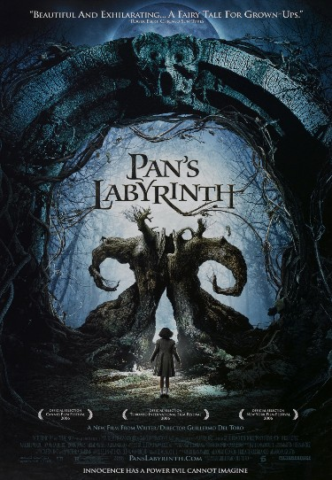

Pan's Labyrinth
Released 2006
Actors:
- Ivana Baquero | Ofelia
- Ariadna Gil | Carmen
- Doug Jones | Fauno
In 1944 Falangist Spain, a girl, fascinated with fairy-tales, is sent along with her pregnant mother to live with her new stepfather, a ruthless captain of the Spanish army. During the night, she meets a fairy who takes her to an old faun in the center of the labyrinth. He tells her she's a princess, but must prove her royalty by surviving three gruesome tasks. If she fails, she will never prove herself to be the true princess and will never see her real father, the king, again.

Oscar Winnings
- Best Achievement in Cinematography
- Best Achievement in Art Direction
- Best Achievement in Makeup
Oscar Nominations
- Best Writing, Original Screenplay
- Best Achievement in Music...
- Best Foreign Language Film of the Year
- Received 22 minutes of applause at the Cannes Film Festival.
- After the first week, movie theaters in Mexico placed signs on posters warning about the movie's graphic violence, because so many people brought small children to see it. It was also reported in the news in Spain.
- Guillermo Del Toro
- Guillermo del Toro first started writing ideas for the film in 1993.